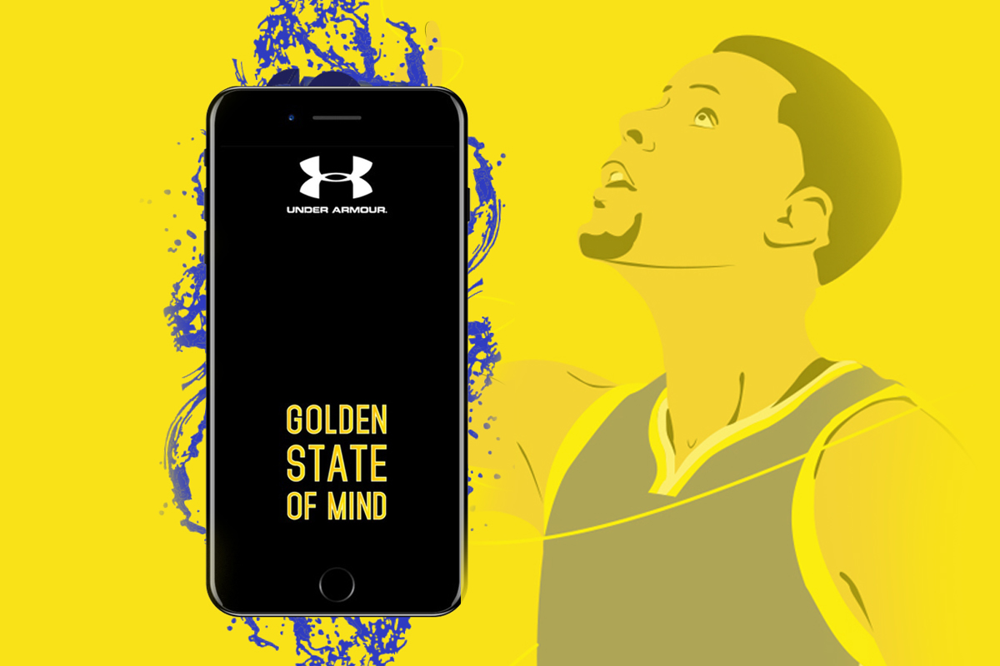
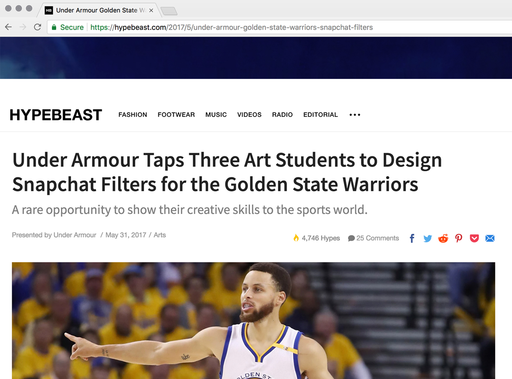
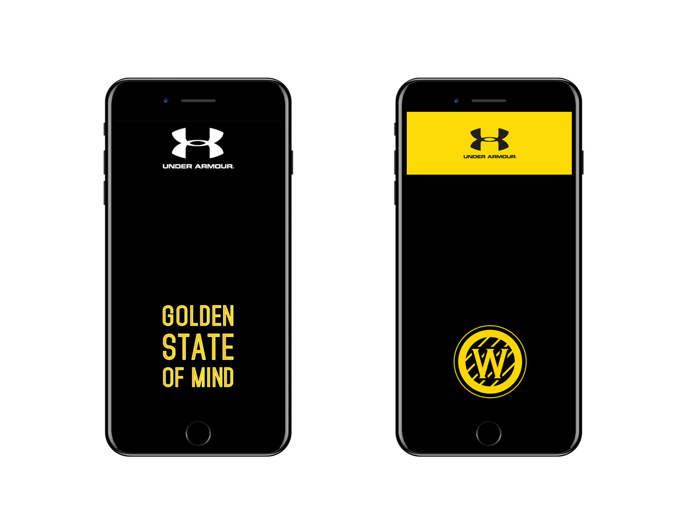

GS Warriors Snapchat Filters
In collaboration with Hypebeast, Under Armour, and California College of the Arts, I was one of three students that produced snapchat Geofilters that were used at Oracle Arena during the Golden State Warriors playoff games.
The print material I created ranged from postcards and posters to signage and displays for Chronicle's retail stores. I also assisted in creating graphics for promotional videos and standard web ads. I enjoyed being able to design such a wide variety of applications.


Printed postcards I designed for titles in adult trade books.
For Chronicle's Fall 2018 catalog, I designed the divider page spreads that focused on their 25 years of unique gift formats, adult trade, and children's books. The colorful and uniquely gridded pages celebrate all of the fun and diverse books new and old. 
At Chronicle, everyone keeps such a fast pace while also working through publishing and design challenges very thoroughly and collobaratively. It was great to get an insight on the publishing industry, especially since Chronicle is one of the very few publishers that continue to push thoughtful and progressive content into the book industry.
Printed postcards I designed for titles in adult trade books.